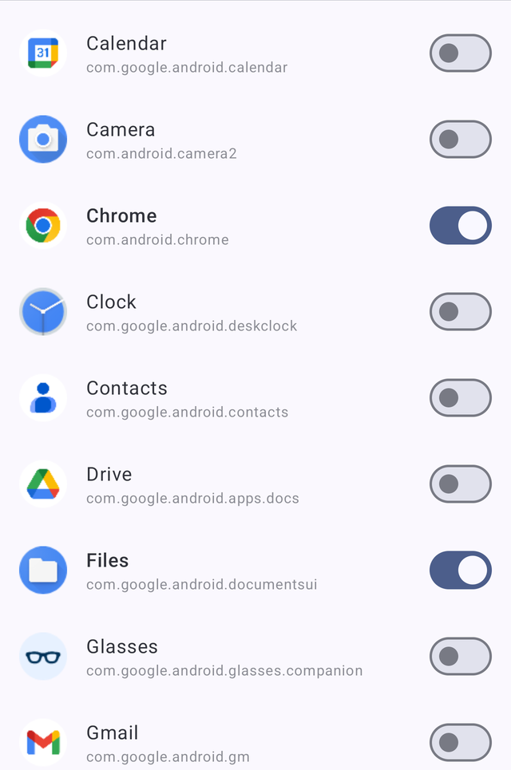

Same phone. One rule.

GrayGate watches which app is in the foreground and grays out the ones you've selected as you switch to them. The change lands within a second or two.
One setup. Then never again.
Android doesn't let a normal app touch the display filter, so GrayGate needs one permission granted from a computer. You do it once — not at every reboot, not after updates, not ever again. Then you can unplug and forget this page exists.
Turn on USB debugging
Settings → About phone → tap Build number 7 times, then Developer options → USB debugging.
Plug into any computer
Mac, Windows, or Linux. A friend's laptop works. You never need it again afterwards.
Paste one line
Copy the command below, press Enter, unplug. That's the whole thing.
adb shell pm grant com.graygate android.permission.WRITE_SECURE_SETTINGS
$ adb devices List of devices attached R58N90XXXX device $ adb shell pm grant com.graygate android.permission.WRITE_SECURE_SETTINGS Done. Unplug the cable — you're finished forever.
What else is in there
Quick Settings tile
Swipe down and cycle Auto → Force Gray → Force Color without opening the app.
Survives reboots
The service comes back on its own after a restart. Nothing to re-enable.
Sleeps when you do
Detection pauses while the screen is off, so it isn't grinding through your battery.
Restores your filter
If you use color correction for color blindness, your setting is saved and put back.
Anti-flicker
Debouncing and an ignore list keep system UI transitions from strobing the screen.
Material You
Dynamic color theming, light and dark, matched to the rest of your phone.
It cannot leak what it never collects
GrayGate makes zero network requests. There is no analytics SDK, no crash reporter, no ad library. Your app list and selections never leave the device.
- No data collection
- No analytics
- No network requests
- No ads
- No accessibility service
Where it falls short
Worth knowing before you install, so nothing surprises you.
- Grayscale covers the whole screen. Android exposes no true per-app filter to third-party apps, so the status bar and nav bar go gray too. Every app in this category shares this limit.
- There's about a 1–2 second delay when you switch apps, because detection polls rather than hooking into the system.
- The one-time ADB step is unavoidable. The permission it grants can't be requested from inside an app on unrooted Android.
- Aggressive battery managers on some Samsung, Xiaomi, and OnePlus devices may kill the service. The app walks you through exempting it.